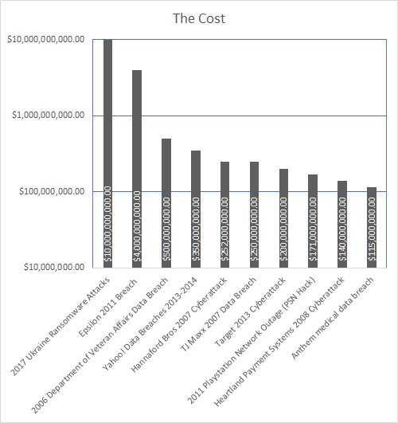

The evidence is clear, if you do not take care of your cybersecurity, the cost could be dire.
Statistics
In 2015, global cybercrime cost $3 trillion USD.
In 2021, global cybercrime cost over $6 trillion USD.
Global cybercrime is projected to cost $10.5 trillion USD by 2025.
Over the course of 2021, the European Union data protection authorities issued $1.25 billion in fines over violations of the General Data Protection Regulation.
Over half of all cyberattacks are commited against small to midsized businesses, and 60% of those businesses fail within 6 months of the attack.
The top 5 industries that suffer the most from cyberattacks are healthcare, manufacturing, financial, government, and transportation.
In 2021, healthcare data breaches cost $10.1 million dollars on average per incident.
In 2022, the healthcare orgainzations across the world suffered an average of 1,463 cyberattacks per week, up 74% compared to 2021.
According to a 2022 report by the Federal Bureau of Investigation, 53% of digital medical devices suffer from known critical vulnerabilites to cyberattacks.
Cybercrimes are vastly underreported for the chief reasons of fear of embarrassment and potential damage to reputation, with estimates as low as 10% of all cybercrimes being reported.